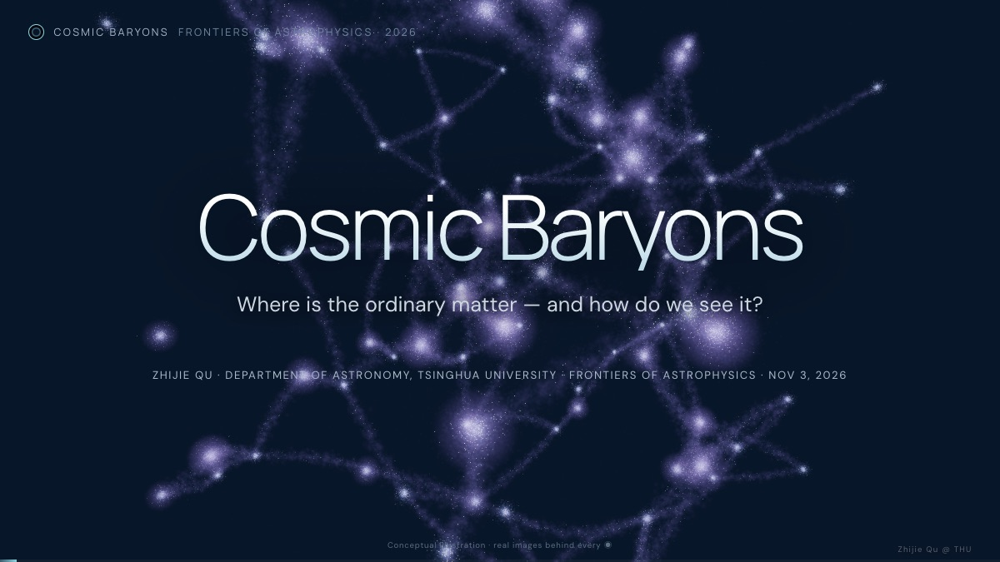

Interactive versions of my lectures, to explore at your own pace. More are on the way.课程讲座的交互版本，可以按自己的节奏浏览。更多内容陆续上线。

An interactive 3D journey from the cosmic web to star-forming clouds: how gas flows into galaxies, makes stars, and is blown back out — and how we see it.从宇宙网到恒星诞生的交互式三维之旅：气体如何流入星系、形成恒星、又被吹回去，以及我们如何看见它。